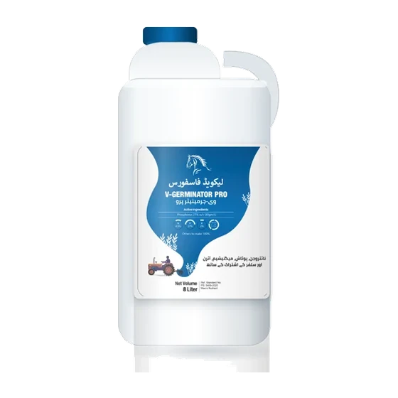
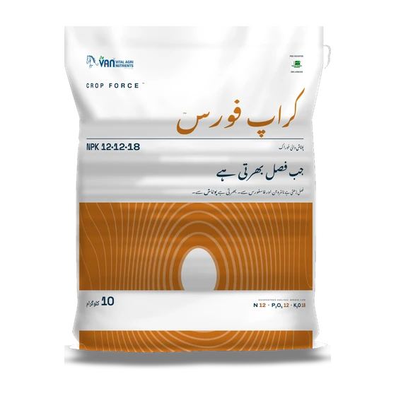
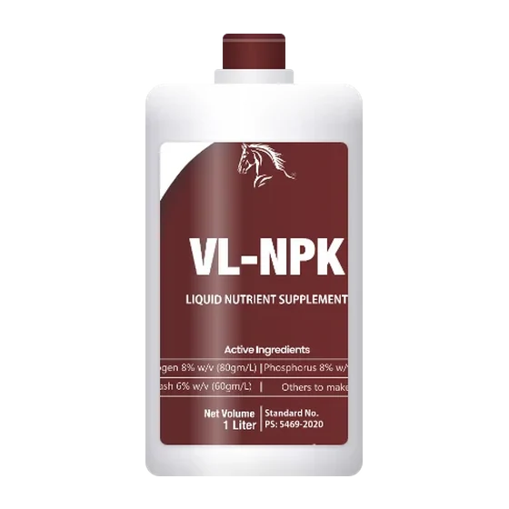
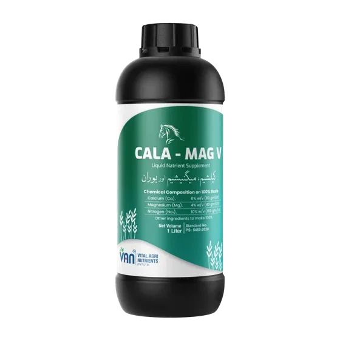

Our brands


23 products. Every analysis published, every batch tested.
Sell it as a VAN brand, or make it yours. All 23 are open for own-brand manufacturing, Vital Urea included.
22 PSQCA licences8 Pakistan StandardsLAB 336 · every batch tested
24 of 24 cards. 23 brands plus the NP Range family card
Method
Stage
NitrogenOwn-brand
Vital Urea
SCU. N 32% · S 13%
BroadcastSowingEarly growth
PhosphorusOwn-brand
V. Ammonium Phosphate
10-44-0 + Fe·Mn·Cu
FertigationMid-life
PhosphorusOwn-brand
VAN NP Rangethe NP Range · a family of 3 grades
6-32 (Green Phosphate) · 5-40 · 8-38. Engineered against calcium fixation
BroadcastBasalSowing
PhosphorusOwn-brand
Green Phosphate
6-32-0 · humic-coated acidic. The NP Range 6-32 grade
BroadcastSowing
PhosphorusOwn-brand
Fusion Phosphate
TSP. P₂O₅ 46%
BroadcastSowing

PhosphorusOwn-brand
V-Germinator Pro
Liquid P 27% + N 4.5 · K 2 · Mg · S · Fe
FertigationMid-life
PotashOwn-brand
Vital Potash
N 11 · K₂O 44. Coated with boron in 2 forms
FertigationMid-life
PotashOwn-brand
Fusion Potash
2-0-50 + S 1.5% · B 1% · Mg 1% · 2 forms
BroadcastFertigationSowing
PotashOwn-brand
SOP
K₂O 50% · S 17.5%. Soil & fertigation
FertigationMid-life
PotashOwn-brand
VL-Potash Liquid
K 30% · foliar / fertigation
FoliarFertigationMaturity
PotashOwn-brand
V-Potash Plus
10-0-40 + Mg · B · chelated Fe
FertigationMid-life

NPK BlendsOwn-brand
Crop Force
NPK 15-15-15 · 12-12-18
DrillingSide dressingBand placementEarly growth

NPK BlendsOwn-brand
VL-NPK
Liquid 8-8-6 w/v. N8 · P8 · K6
FoliarMid-life
MicronutrientsOwn-brand
VL-Micromix
Zn 5 · Fe 2 · Mn 2 · Cu 1 (% w/v)
FoliarMid-life
MicronutrientsOwn-brand
VL-Boron
Boron 5% w/v liquid
FoliarMid-life
MicronutrientsOwn-brand
V-Zinc 10%
Zinc sulfate 10% w/v
FertigationFoliarGerminationEarly growth
MicronutrientsOwn-brand
V-Transform
Zinc 21% granular
BroadcastSide dressingFertigationGerminationEarly growth

Secondary NutrientsOwn-brand
Cala-Mag V
N 10% · Ca 6% · Mg 4% · B 1%
FertigationFoliarMid-life
Secondary NutrientsOwn-brand
V-Mag Essential
Mg 8.5% · B 1% powder
FertigationMid-life
Secondary NutrientsOwn-brand
Green Sulfur
Sulfur 70% WDG
BroadcastFertigationSowing
Soil Health & BiologicalsOwn-brand
V-Compost
Organic matter 25% + N 5%
BroadcastDrillingSoil prep
Soil Health & BiologicalsOwn-brand
Humi Grow
Potassium humate pellets
BroadcastSowing
Soil Health & BiologicalsOwn-brand
Humi Grow Plus
Humic Acid 10% · Potash 3.5% liquid
FertigationEarly growth
Soil Health & BiologicalsOwn-brand
Tornado
Amino · Fulvic · Humic · Seaweed
FoliarMid-lifeMaturity
Distribution
Carry VAN brands in your territory.
Range, pricing and territory. Ask on WhatsApp.
Own-brand manufacturing
Same specification, your brand name.
All 23 are open for own-brand manufacturing, Vital Urea included. Same line, same QC, your label.
Make it your brand →